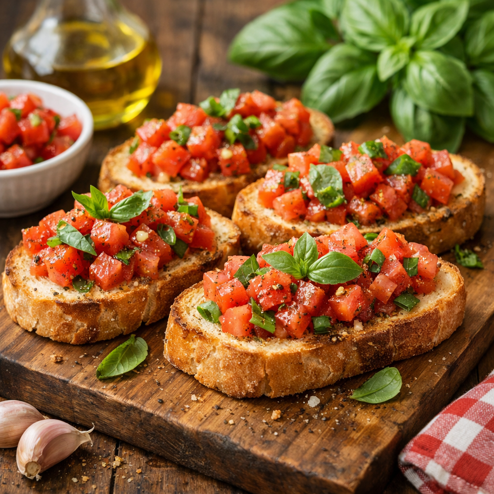

Bruschetta Italiana
Pão artesanal, tomate fresco e manjericão.
Fundado em 1998, o Sabor Vermelho nasceu do apreço pela alta gastronomia e do desejo de transformar cada
refeição em uma experiência memorável. Aliando tradição culinária e influências contemporâneas, nossa
cozinha valoriza ingredientes nobres, técnicas apuradas e uma apresentação precisa e sofisticada.
Cada criação é cuidadosamente concebida para despertar os sentidos, harmonizando sabores profundos, aromas
delicados e uma estética refinada. Nosso compromisso é oferecer uma experiência singular, onde excelência,
equilíbrio e autenticidade se encontram à mesa.
O ambiente do Sabor Vermelho reflete essa mesma essência: elegante, intimista e acolhedor. Um espaço pensado
para momentos especiais, encontros marcantes e celebrações que exigem atenção absoluta aos detalhes.
Aqui, a gastronomia é tratada como arte. O cuidado, como princípio. E receber bem, como vocação.
Pão artesanal, tomate fresco e manjericão.
Filé mignon com molho reduzido de vinho tinto.
Arroz arbório com cogumelos frescos.
Clássica torta com creme de baunilha.
O Sabor Vermelho dispõe de um espaço privativo localizado no mezanino, no andar superior do restaurante, ideal para pequenos grupos.
Sejam eventos sociais ou corporativos, oferecemos uma mesa principal compartilhada com capacidade para até 8 lugares, além da possibilidade de montar uma segunda mesa lateral para até 4 pessoas, totalizando 12 convidados.
Trata-se de um ambiente exclusivo e totalmente privativo, proporcionando conforto, privacidade e uma experiência gastronômica memorável.
Garanta sua experiência no Sabor Vermelho. Preencha os dados abaixo e nossa equipe entrará em contato para confirmar sua reserva.
Uma experiência gastronômica impecável. Pratos extremamente bem executados, ambiente elegante e atendimento atencioso do início ao fim.
— Mariana R. Cliente desde 2023 ”O Sabor Vermelho é o lugar ideal para ocasiões especiais. Cada detalhe é pensado com cuidado, da apresentação ao sabor.
— Lucas M. Jantar comemorativo ”Ambiente sofisticado, pratos memoráveis e uma carta de vinhos impecável. Uma das melhores experiências gastronômicas da cidade.
— Fernanda S. Cliente recorrente ”